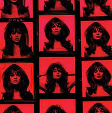

Elizabeth Woolridge Grant, known professionally as Lana Del Rey, is an American singer-songwriter. Her music is noted for its cinematic quality and exploration of tragic romance, glamour, and melancholia, with frequent references to contemporary pop culture and 1950s–1960s Americana.
About Lana Del Rey
Who is Lana Del Rey?

Lana Del Rey makes vulnerable, emotional pop music that often incorporates nostalgia for America's past. Del Rey first performed under her real name of Lizzy Grant but found fame as Lana Del Rey in 2011 with a homemade music video for the song "Video Games." After "Video Games" became a viral hit, Del Rey was criticized for a lack of authenticity; she's also been called out for songs that sometimes feature female submissiveness and self-destruction. She has an extensive fanbase and has sold millions of albums, with 2014's Ultraviolence and 2017's Lust for Life both landing at No. 1 on the Billboard 200.
Early Life

Del Rey was born as Elizabeth Woolridge Grant on June 21, 1985, in New York City. Del Rey's parents were working in advertising in New York City when she was born, but left that life behind to move to Lake Placid, New York, in the Adirondack Mountains when Del Rey was a baby. She grew up with a younger brother and sister. Her sister, photographer Caroline "Chuck" Grant, shot the Lust for Life album cover and has taken promotional photos of Del Rey.